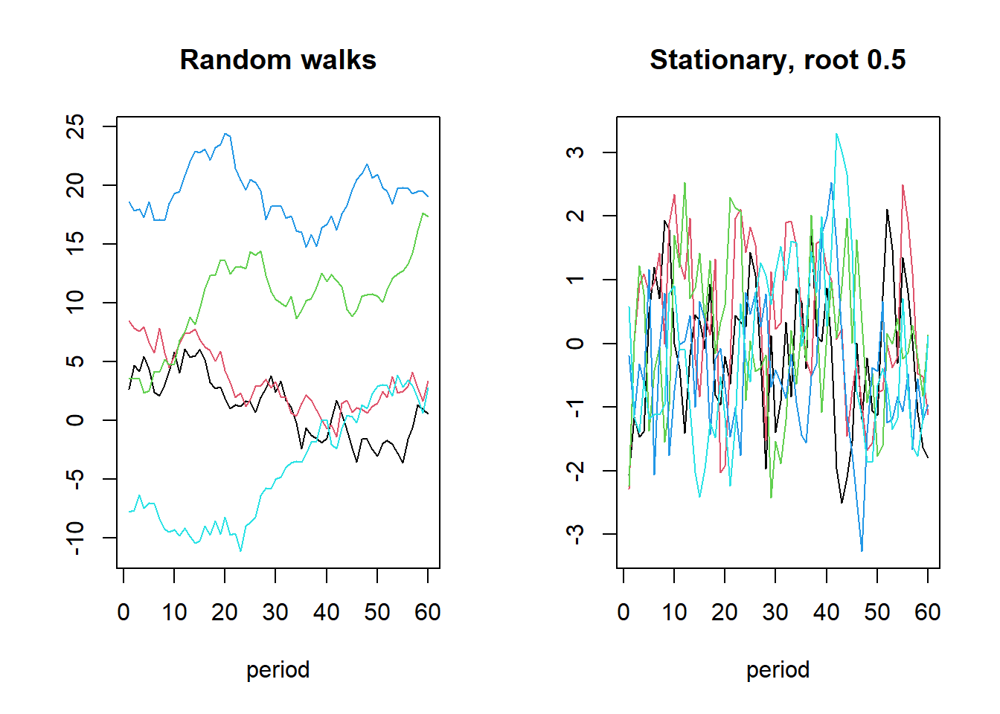
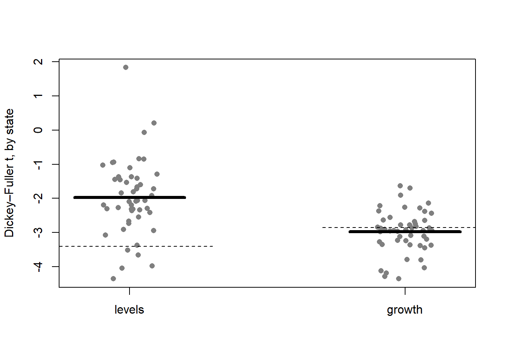
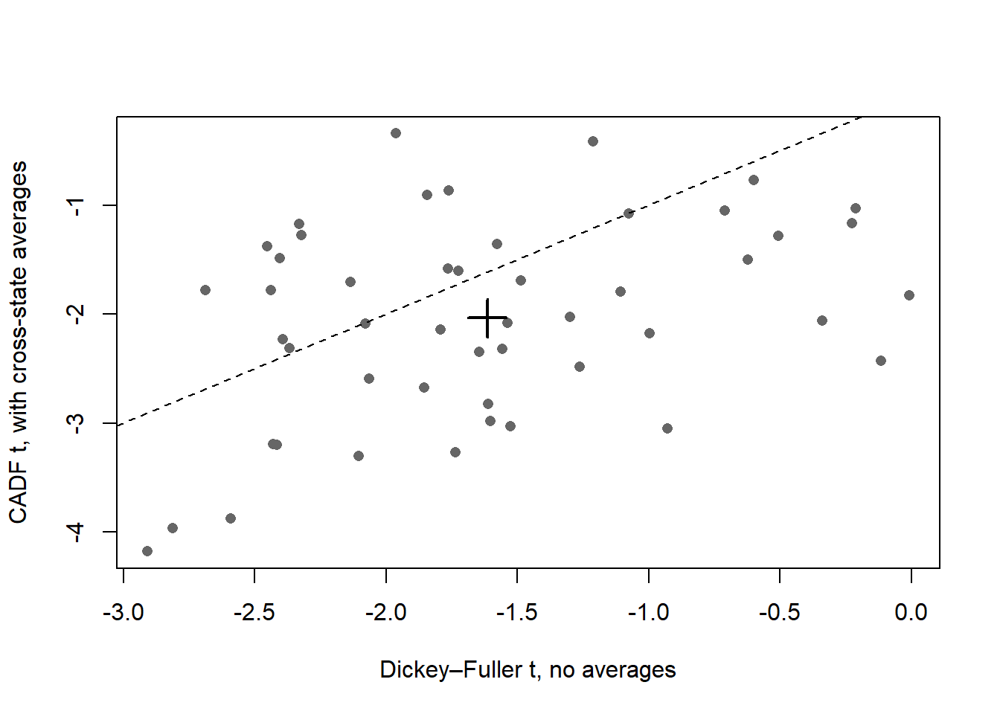
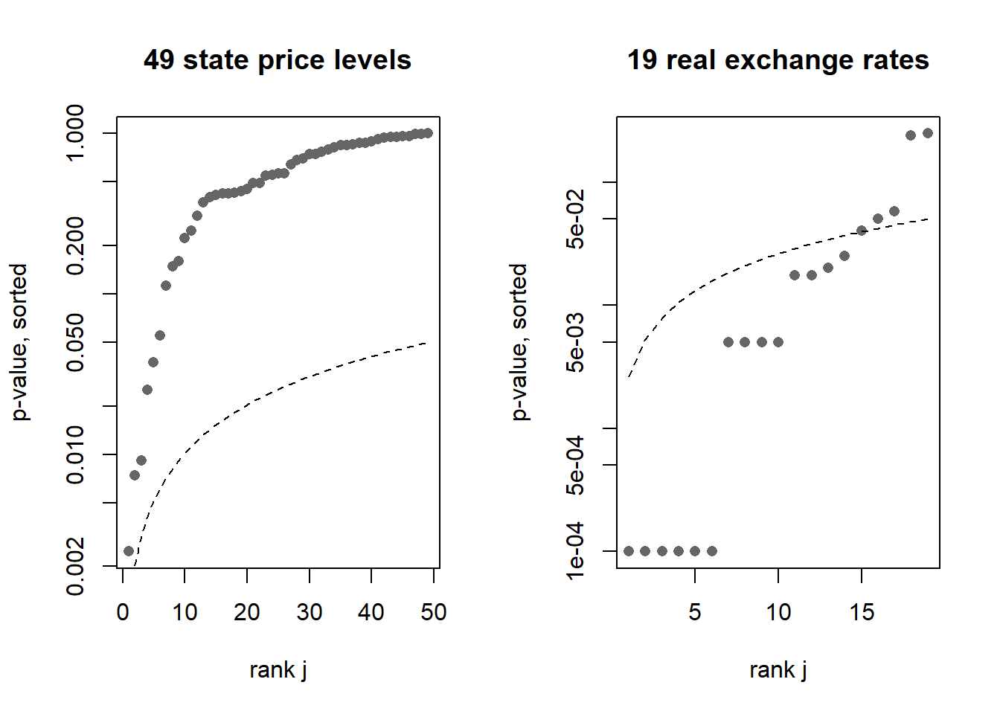
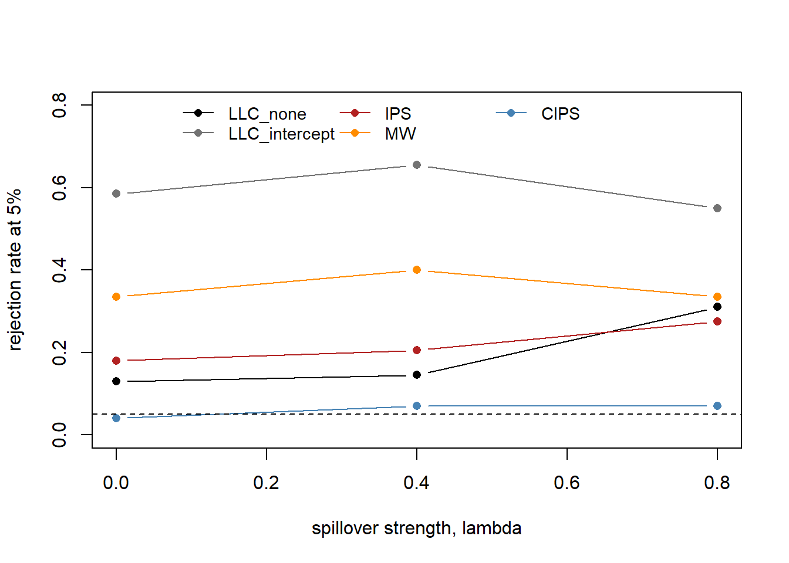
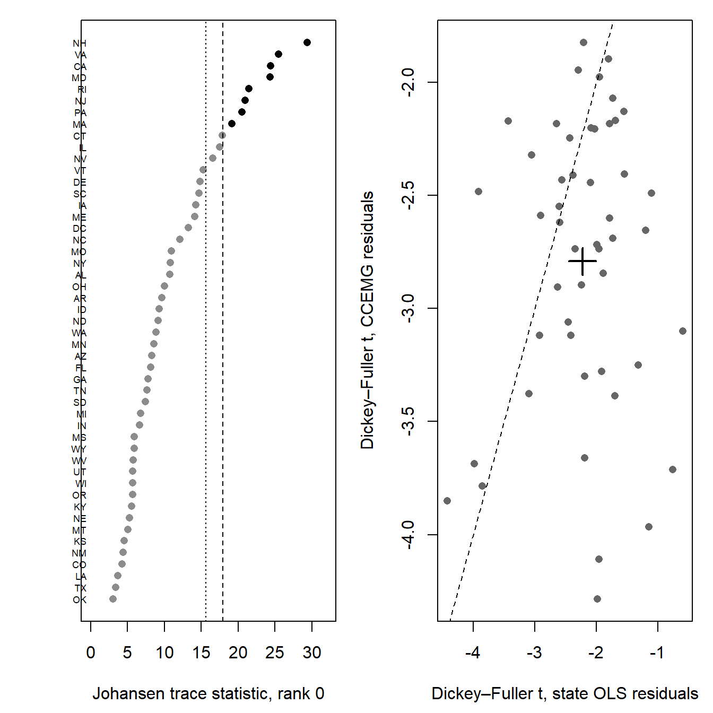
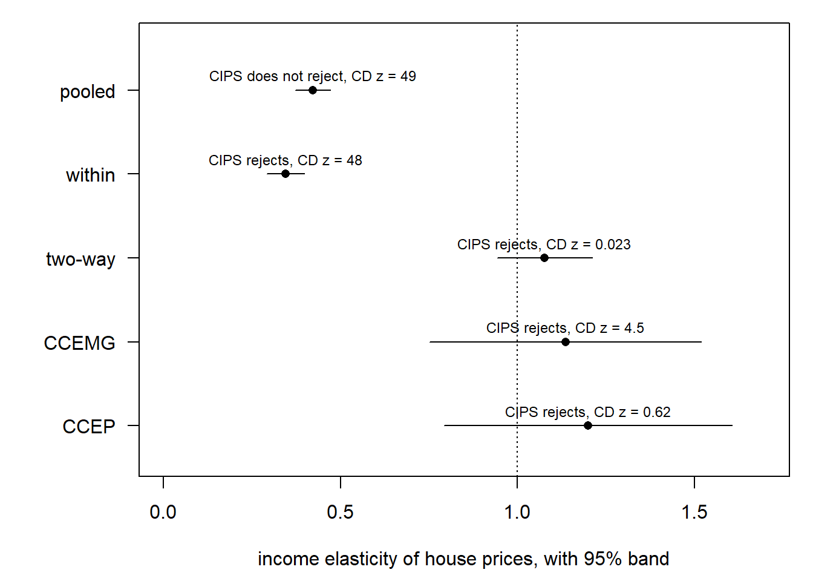

flowchart TD
Q["Do the series wander?"] --> CD{"Do units move together?<br/>CD test"}
CD -->|"no"| G1["Tests that assume<br/>independent units"]
CD -->|"yes"| G2["Tests that allow<br/>a common factor: CIPS"]
G1 --> R{"Unit root rejected?"}
G2 --> R
R -->|"yes"| W["Which series?<br/>Hanck / Simes"]
R -->|"no"| I1["Treat as I(1)"]
I1 --> C{"Do they share a trend?<br/>each state, then the panel"}
C -->|"yes"| LR["Estimate the long run<br/>with the factor removed"]
C -->|"no"| D["Difference, or model<br/>the short run"]
W --> L["Check the traps:<br/>panel shape, spatial shocks,<br/>shared trends"]
LR --> L
D --> L
5 Time dependence
The question of this chapter. A panel series can depend on its own past, not only on other units. This chapter starts with unit roots: before regressing one panel variable on another, find out whether each series returns to a stable level or wanders off with no anchor. A wandering series has a unit root, and is called integrated of order one, I(1): its change from one year to the next does not wander, and that change is I(0). Two wandering series can look related when they are not, so this question comes before any estimate. The second half of the chapter asks whether two wandering series share one trend, cointegration, and how to estimate that long-run link. Serial correlation is in the serial correlation step of core panel models, and the lagged outcome as a regressor is in dynamic panels.
The running example. House prices in 49 US states over 29 years, HousePricesUS (Holly et al. 2010) in pder (Croissant and Millo 2019). The earlier chapter found that the states move together strongly: the CD test gives z = 53 (testing for cross-sectional dependence). That one fact decides which tests below can be trusted.
The map. Each section answers one box and sends you to the next.
Every section has the same shape. Question in one sentence, intuition in one paragraph, the test in words, run it, then read it: a case where the test rejects, a case where it does not, and a case where it misleads. A next box says where to go. Recipe, pitfalls and book check sit in boxes at the end of each section; open them when you need them.
The math and the full literature are in the theory notes on panel unit roots and cointegration. This chapter does not need them.
# Shared simulators and reshapers live in R/; see R/simulate-panels.R.
devtools::load_all(quiet = TRUE)
data("HousePricesUS", package = "pder")
php <- plm::pdata.frame(HousePricesUS)5.1 Why it matters
Question. If two series both wander, will a regression find a relationship that does not exist?
Intuition. A random walk has no level it returns to. Any two of them drift, and over a short window two drifts look like a trend in common. A regression reads that coincidence as a slope and, worse, as a precise slope. This is the spurious regression of Granger and Newbold (1974). Stationary series cannot do this: each one keeps returning to its mean, so a chance co-movement does not last.
set.seed(2)
op <- graphics::par(mfrow = c(1, 2))
graphics::matplot(sim_ar_panel(5, 60, k = 0), type = "l", lty = 1,
main = "Random walks", xlab = "period", ylab = "")
graphics::matplot(sim_ar_panel(5, 60, k = 5), type = "l", lty = 1,
main = "Stationary, root 0.5", xlab = "period", ylab = "")
graphics::par(op)The experiment. No test yet, only the damage. Draw 49 independent random walks for y and 49 more for x, 30 periods each, so the true slope is zero. Regress y on x with unit fixed effects and record whether the slope is “significant” at 5%. Repeat 200 times. A sound procedure says “significant” 5% of the time.
spurious <- function(model) {
d <- as_pdata(sim_rw_panel(49, 30), sim_rw_panel(49, 30))
fit <- plm::plm(y ~ x, data = d, model = model)
summary(fit)$coefficients["x", "Pr(>|t|)"] < 0.05
}
set.seed(1)
c(levels = mean(replicate(200, spurious("within"))),
differences = mean(replicate(200, spurious("fd")))) levels differences
0.570 0.035 Read it.
- In levels, it misleads. The fixed-effects regression finds a relationship that is not there in 57% of panels. Having 49 units does not help.
- In first differences, it does not. Regressing changes on changes gives 3.5%, close to the nominal 5%. Differencing removes the wandering, and with it the spurious fit.
What the panel does buy. Phillips and Moon (1999) show that the pooled slope itself is not the problem. With many units it settles on a meaningful long-run average, here zero. The problem is the default standard error, which assumes the errors forget their past. Errors from two random walks never do. Standard errors clustered by unit allow any pattern over time within a unit, and they bring the rejection rate back near 5%:
spurious_clustered <- function() {
d <- as_pdata(sim_rw_panel(49, 30), sim_rw_panel(49, 30))
fit <- plm::plm(y ~ x, data = d, model = "within")
v <- plm::vcovHC(fit, cluster = "group")
summary(fit, vcov = v)$coefficients["x", "Pr(>|t|)"] < 0.05
}
set.seed(1)
mean(replicate(200, spurious_clustered()))[1] 0.065That fix only works if you know the series wander. So test first.
Next. Find out whether your series wander: what a rejection means.
5.2 What a rejection means
Question. When a panel unit-root test rejects, what exactly has it found?
Intuition. One series of 30 years can barely tell a root of 0.9 from a root of 1. A panel adds units instead of years: 49 short series carry more evidence than one. But “the panel rejects a unit root” can mean three different things, and the test you pick decides which one you found (Pesaran 2015, 818–20):
| What is stationary under the alternative | Tests built for it | |
|---|---|---|
| All, alike | every series, with the same root | LLC |
| A share | some series, a fixed fraction of the panel | IPS, Fisher, CIPS |
| A handful | a fixed number of series, however large N gets | none |
Every test averages over units. Averaging finds a share easily, because more units bring more evidence. It loses a handful, because their signal is diluted by the growing number of units that carry none.
The test. All tests share one null: every series has a unit root. They differ in the alternative, and the printed output does not say which one. You have to state it yourself.
Run it. Simulated panels, because only a simulation knows how many series are truly stationary. sim_ar_panel(n, t, k) draws n independent series of length t, of which the first k are stationary (root 0.5) and the rest are random walks. For each panel size N, we count how often IPS rejects at 5% over 200 panels of T = 30:
reject_rate <- function(n, k, reps = 200, t = 30) {
p <- replicate(reps, plm::purtest(sim_ar_panel(n, t, k), test = "ips",
exo = "intercept",
lags = 0)$statistic$p.value)
mean(p < 0.05)
}
set.seed(1)
ns <- c(10, 30, 90)
data.frame(
N = ns,
none = sapply(ns, function(n) reject_rate(n, k = 0)),
two = sapply(ns, function(n) reject_rate(n, k = 2)),
share_40 = sapply(ns, function(n) reject_rate(n, k = 0.4 * n))
) N none two share_40
1 10 0.085 0.40 0.92
2 30 0.080 0.30 1.00
3 90 0.150 0.25 1.00Read it.
- Rejects (a share is stationary). Column
share_40: 40% of series are stationary. Power goes 0.92 → 1.00 → 1.00 as N grows. More units, more evidence. - Does not reject (nothing is stationary). Column
none: every series is a random walk, so this is the false-alarm rate. It should be 0.05. It is 0.085–0.15, because T = 30 is short. Keep this number in mind: the test over-rejects even when nothing is wrong. - Misleads (a handful is stationary). Column
two: two series are stationary whatever N is. Power falls from 0.40 to 0.25 as N grows, while the false-alarm rate rises to 0.15. At N = 90 the test can no longer tell two stationary series from none.
So a rejection says “the panel as a whole does not look like N random walks”. It does not say which series are stationary, nor that all of them are. At short T, Pesaran (2015, 820, Remark 8) limit the reading to this “average sense”.
Next. Pick a test. If your units are independent: tests that assume independent units. If they move together: tests that allow a common factor.
CautionPitfalls
The output does not name the alternative. LLC rejects towards “all, alike” and IPS towards “a share”, but both print the same word:
set.seed(1)
m <- sim_ar_panel(n = 20, t = 30, k = 8)
llc <- plm::purtest(m, test = "levinlin", exo = "intercept", lags = 0)
ips <- plm::purtest(m, test = "ips", exo = "intercept", lags = 0)
c(llc = llc$statistic$alternative, ips = ips$statistic$alternative) llc ips
"stationarity" "stationarity" "stationarity" for both, which is true of neither. Write the alternative into the text by hand.
TipBook check
None. The three alternatives are a classification (Pesaran 2015, 818–20, eqs. 31.4–31.6), not a statistic, and .docs/panel-spat-PLAN.md records no numerical target for this section.
5.3 Tests that assume independent units
Question. Do log house prices carry a unit root in every state, if the states are independent of each other?
Intuition. Run a Dickey–Fuller regression on each state: this year’s change in log price on last year’s level, plus a few past changes. If the level does not predict the change, the series has no level to return to, and the t statistic on the level is small. Then combine the 49 answers into one. The tests differ only in what they combine:
| Test | Combines | Alternative | test = |
|---|---|---|---|
| Levin–Lin–Chu (Levin et al. 2002) | one slope from all states stacked | all, alike | "levinlin" |
| Im–Pesaran–Shin (Im et al. 2003) | the average of 49 t statistics | a share | "ips" |
| Maddala–Wu (Maddala and Wu 1999) | the 49 p-values | a share | "madwu" |
| Hadri (Hadri 2000) | 49 stationarity statistics; null reversed | — | "hadri" |
Hadri is the odd one out. Its null is “every series is stationary”. When the first three fail to reject a unit root and Hadri rejects stationarity, two opposite questions give one answer.
The test. Null: every series has a unit root (Hadri: every series is stationary). Key assumption: states are independent once a common year effect is removed. That assumption is what the next section drops.
Run it. Log prices in levels, with a trend and two lags in each state’s regression, as in Croissant and Millo (2019, sec. 8.4.2):
plm::purtest(log(php$price), test = "levinlin", lags = 2, exo = "trend")
plm::purtest(log(php$price), test = "ips", lags = 2, exo = "trend")
plm::purtest(log(php$price), test = "madwu", lags = 2, exo = "trend")
plm::purtest(log(php$price), test = "hadri", lags = 2, exo = "trend")
Levin-Lin-Chu Unit-Root Test (ex. var.: Individual Intercepts and
Trend)
data: log(php$price)
z = -1.2573, p-value = 0.1043
alternative hypothesis: stationarity
Im-Pesaran-Shin Unit-Root Test (ex. var.: Individual Intercepts and
Trend)
data: log(php$price)
Wtbar = 0.76622, p-value = 0.7782
alternative hypothesis: stationarity
Maddala-Wu Unit-Root Test (ex. var.: Individual Intercepts and Trend)
data: log(php$price)
chisq = 99.843, df = 98, p-value = 0.4292
alternative hypothesis: stationarity
Hadri Test (ex. var.: Individual Intercepts and Trend) (Heterosked.
Consistent)
data: log(php$price)
z = 64.745, p-value < 2.2e-16
alternative hypothesis: at least one series has a unit rootRead it: does not reject (levels). LLC, IPS and Maddala–Wu give p = 0.10, 0.78 and 0.43: no evidence against a unit root. Hadri rejects stationarity at p ≈ 0. All four agree: price levels wander.
Now the growth rates, the first difference of log prices. A growth rate should not wander, so the tests should reject:
dlp <- diff(log(php$price))
plm::purtest(dlp, test = "levinlin", lags = 1, exo = "intercept")
plm::purtest(dlp, test = "ips", lags = 1, exo = "intercept")
plm::purtest(dlp, test = "madwu", lags = 1, exo = "intercept")
plm::purtest(dlp, test = "hadri", lags = 1, exo = "intercept")
Levin-Lin-Chu Unit-Root Test (ex. var.: Individual Intercepts)
data: dlp
z = -10.97, p-value < 2.2e-16
alternative hypothesis: stationarity
Im-Pesaran-Shin Unit-Root Test (ex. var.: Individual Intercepts)
data: dlp
Wtbar = -11.07, p-value < 2.2e-16
alternative hypothesis: stationarity
Maddala-Wu Unit-Root Test (ex. var.: Individual Intercepts)
data: dlp
chisq = 343.35, df = 98, p-value < 2.2e-16
alternative hypothesis: stationarity
Hadri Test (ex. var.: Individual Intercepts) (Heterosked. Consistent)
data: dlp
z = 12.348, p-value < 2.2e-16
alternative hypothesis: at least one series has a unit rootThe 49 state statistics that IPS averages, in levels and in growth rates:
lev <- plm::purtest(log(php$price), test = "ips", lags = 2, exo = "trend")
gro <- plm::purtest(dlp, test = "ips", lags = 1, exo = "intercept")
t_stat <- function(pu) sapply(pu$idres, \(r) unname(r$trho))
ts <- data.frame(levels = t_stat(lev), growth = t_stat(gro))
graphics::stripchart(ts, vertical = TRUE, method = "jitter", pch = 16,
col = "grey50", ylab = "Dickey–Fuller t, by state")
graphics::segments(c(0.8, 1.8), colMeans(ts), c(1.2, 2.2), colMeans(ts),
lwd = 4)
graphics::segments(c(0.7, 1.7), c(-3.41, -2.86), c(1.3, 2.3),
c(-3.41, -2.86), lty = 2)
Read it: rejects (growth rates). LLC, IPS and Maddala–Wu all reject at p < 2.2 × 10⁻¹⁶. In the picture the whole cloud drops: the mean t goes from −1.98 in levels to −2.98 in growth rates, and 30 of the 49 states would reject on their own. Growth rates do not wander.
Read it: misleads (Hadri on growth rates). Hadri also rejects, z = 12.3: it says growth rates are not stationary either. The two families now contradict each other, and the reason is the assumption they share. The states are far from independent: the CD test gives z = 53 on levels and z = 71 on growth rates.
plm::pcdtest(dlp, test = "cd")
Pesaran CD test for cross-sectional dependence in panels
data: dlp
z = 71.536, p-value < 2.2e-16
alternative hypothesis: cross-sectional dependenceWhen 49 states move together, they are not 49 independent pieces of evidence. Every test in this section counts them as if they were. Treat its numbers as the ones to beat, not the ones to report.
Next. CD rejects here, so go to tests that allow a common factor. On a panel where CD does not reject, report LLC or IPS with its alternative, and go to which series are stationary.
NoteRecipe
# y: a pseries, e.g. plm::pdata.frame(df, index = c("id", "year"))$y
plm::pcdtest(y, test = "cd") # first: are units independent?
plm::purtest(y, test = "ips", exo = "intercept", lags = "AIC", pmax = 4)
plm::purtest(y, test = "hadri", exo = "intercept", lags = "AIC", pmax = 4)
CautionPitfalls
A formula silently ignores exo. purtest takes a matrix, a pseries or a formula. With a formula, the right-hand side sets the deterministic part and exo is dropped without a warning:
data("Grunfeld", package = "plm")
pG <- plm::pdata.frame(Grunfeld, index = c("firm", "year"))
plm::purtest(inv ~ 1, data = Grunfeld, index = "firm", test = "madwu",
pmax = 4, exo = "trend")
plm::purtest(inv ~ trend, data = Grunfeld, index = "firm", test = "madwu",
pmax = 4)
plm::purtest(pG$inv, test = "madwu", pmax = 4, exo = "trend")
Maddala-Wu Unit-Root Test (ex. var.: Individual Intercepts)
data: inv ~ 1
chisq = 14.719, df = 20, p-value = 0.7923
alternative hypothesis: stationarity
Maddala-Wu Unit-Root Test (ex. var.: Individual Intercepts and Trend)
data: inv ~ trend
chisq = 78.977, df = 20, p-value = 5.853e-09
alternative hypothesis: stationarity
Maddala-Wu Unit-Root Test (ex. var.: Individual Intercepts and Trend)
data: pG$inv
chisq = 78.977, df = 20, p-value = 5.853e-09
alternative hypothesis: stationarityThe first call asks for a trend and gets intercepts only: 14.719 against 78.977. Pick one interface and keep to it.
LLC and Hadri need a balanced panel. IPS and Maddala–Wu do not. On the unbalanced EmplUK (Arellano and Bond 1991), two of four refuse:
data("EmplUK", package = "plm")
pE <- plm::pdata.frame(EmplUK, index = c("firm", "year"))
# `error: true` prints each refusal and carries on; `results: markup` keeps
# each answer under the call that produced it.
plm::purtest(log(pE$emp), test = "levinlin", exo = "intercept", lags = 0)Error in `plm::purtest()`:
! test = "levinlin" is not applicable to unbalanced panelsplm::purtest(log(pE$emp), test = "ips", exo = "intercept", lags = 0)
Im-Pesaran-Shin Unit-Root Test (ex. var.: Individual Intercepts)
data: log(pE$emp)
Wtbar = 12.575, p-value = 1
alternative hypothesis: stationarityplm::purtest(log(pE$emp), test = "madwu", exo = "intercept", lags = 0)
Maddala-Wu Unit-Root Test (ex. var.: Individual Intercepts)
data: log(pE$emp)
chisq = 606.34, df = 280, p-value < 2.2e-16
alternative hypothesis: stationarityplm::purtest(log(pE$emp), test = "hadri", exo = "intercept", lags = 0)Error in `hadritest()`:
! Hadri test is not applicable to unbalanced panelsInstall urca. Maddala–Wu combines per-state p-values. plm reads them from MacKinnon (1996) through urca; without it, it falls back to MacKinnon (1994). On house prices that moves p from 0.4292 to 0.4313:
plm::purtest(log(php$price), test = "madwu", lags = 2, exo = "trend",
p.approx = "MacKinnon1994")
Maddala-Wu Unit-Root Test (ex. var.: Individual Intercepts and Trend)
data: log(php$price)
chisq = 99.768, df = 98, p-value = 0.4313
alternative hypothesis: stationarityIPS tbar. ips.stat = "tbar" is exact for fixed T, but only without lags, and it returns tabulated critical values instead of a p-value.
Missing tests. Breitung (Breitung 2000) and Harris–Tzavalis (Harris and Tzavalis 1999), which have the best size record (Pesaran 2015, 838), are not in plm. The benchmark is Stata’s xtunitroot.
TipBook check
Croissant and Millo (2019, sec. 8.4.2) runs LLC, Maddala–Wu and IPS on log house prices with lags = 2, exo = "trend"; the levels run above is that run. The second check is the ?purtest example: Maddala–Wu on Grunfeld investment must give the same statistic through all three interfaces.
wide <- data.frame(split(Grunfeld$inv, Grunfeld$firm))
plm::purtest(wide, test = "madwu", pmax = 4, exo = "intercept")
plm::purtest(inv ~ 1, data = Grunfeld, index = "firm", test = "madwu",
pmax = 4)
plm::purtest(pG$inv, test = "madwu", pmax = 4, exo = "intercept")
Maddala-Wu Unit-Root Test (ex. var.: Individual Intercepts)
data: wide
chisq = 14.719, df = 20, p-value = 0.7923
alternative hypothesis: stationarity
Maddala-Wu Unit-Root Test (ex. var.: Individual Intercepts)
data: inv ~ 1
chisq = 14.719, df = 20, p-value = 0.7923
alternative hypothesis: stationarity
Maddala-Wu Unit-Root Test (ex. var.: Individual Intercepts)
data: pG$inv
chisq = 14.719, df = 20, p-value = 0.7923
alternative hypothesis: stationarity14.719 from all three.
5.4 Tests that allow a common factor
Question. Do house prices still look like random walks once we allow all states to be hit by one common shock, each state to its own degree?
Intuition. A national credit boom lifts every state’s prices, some more than others. That shared shock makes 49 states look like fewer independent pieces of evidence. The fix is to give each state’s Dickey–Fuller regression a proxy for the shock: the cross-state average of prices, last year and this year’s change. Each state gets its own coefficient on the average, so each state can react to the shock by its own amount. Then average the 49 t statistics, as IPS does. That average is CIPS (Pesaran 2007).
The test. Null: every series has a unit root. Alternative: a share is stationary. Assumption: one common factor, and no other link between states. CIPS has no exact p-value; plm returns the nearest tabulated level, so 0.1 means above 0.10 and 0.01 means below 0.01.
Run it. Levels get a drift; growth rates get neither drift nor trend:
plm::cipstest(log(php$price), type = "drift")
Pesaran's CIPS test for unit roots
data: log(php$price)
CIPS test = -2.0342, lag order = 2, p-value = 0.1
alternative hypothesis: Stationarityplm::cipstest(diff(log(php$price)), type = "none")
Pesaran's CIPS test for unit roots
data: diff(log(php$price))
CIPS test = -1.8199, lag order = 2, p-value = 0.01
alternative hypothesis: StationarityWhat the averages do to each state’s evidence. cipstest keeps the 49 augmented regressions in $tmods; the t statistic on the lagged level, le, is each state’s CADF statistic, and their mean is CIPS:
cips <- plm::cipstest(log(php$price), type = "drift")
adf <- plm::purtest(log(php$price), test = "ips", lags = 2, exo = "intercept")
t_adf <- sapply(adf$idres, \(r) unname(r$trho))
t_cadf <- sapply(cips$tmods, \(m) summary(m)$coefficients["le", "t value"])
graphics::plot(t_adf, t_cadf, pch = 16, col = "grey40",
xlab = "Dickey–Fuller t, no averages",
ylab = "CADF t, with cross-state averages")
graphics::abline(0, 1, lty = 2)
graphics::points(mean(t_adf), mean(t_cadf), pch = 3, cex = 2.5, lwd = 2)
c(mean_adf = mean(t_adf), mean_cadf = mean(t_cadf), cips = cips$statistic) mean_adf mean_cadf cips.CIPS test
-1.615296 -2.034152 -2.034152 Read it.
- Does not reject (levels). CIPS = −2.03, p above 0.10. After the common shock is allowed for, price levels still wander. This now carries weight, because the test no longer assumes the states are independent. The picture shows the averages at work: they move almost every state’s statistic, most of them down, and the mean goes from −1.62 to −2.03, with no state near the −3 or so a single test would need.
- Rejects (growth rates). CIPS = −1.82, p below 0.01. Growth rates do not wander. There is no contradiction left: the Hadri result of the previous section was the common shock speaking.
Rejects, and it means something: the residuals of a regression. Prices wander, and so do incomes. If a regression of one on the other leaves residuals that do not wander, the two share one trend: they are cointegrated, and the levels regression is meaningful rather than spurious (why it matters). Take the two CCE regressions of the CCE section and test their residuals:
# pcce() builds a call to plm(), so plm must be attached, not just namespaced.
library(plm)
ccemg <- plm::pcce(log(price) ~ log(income), data = HousePricesUS,
model = "mg")
ccep <- plm::pcce(log(price) ~ log(income), data = HousePricesUS,
model = "p")
plm::cipstest(residuals(ccemg), type = "none")
plm::cipstest(residuals(ccep), type = "none")
Pesaran's CIPS test for unit roots
data: residuals(ccemg)
CIPS test = -2.6588, lag order = 2, p-value = 0.01
alternative hypothesis: Stationarity
Pesaran's CIPS test for unit roots
data: residuals(ccep)
CIPS test = -2.2049, lag order = 2, p-value = 0.01
alternative hypothesis: StationarityBoth reject. Log price and log income move together in the long run, and the CCE estimates of the income elasticity, 1.14 and 1.20, describe that long-run link.
Next. Levels wander, residuals do not: estimate in levels with CCE (CCE). To find out which states drive a rejection: which series are stationary. Before you trust any of it: when the tests lie.
NoteRecipe
# y: a pseries. Levels of a trending variable: "drift" or "trend".
# Differences and regression residuals: "none".
plm::cipstest(y, type = "drift")
plm::cipstest(diff(y), type = "none")
plm::cipstest(residuals(fit), type = "none") # fit: a pcce() model
CautionPitfalls
pseriesonly.cipstesttakes no formula and no matrix. Wrap a matrix withas_pseries()(inR/panel-reshape.R).typeis your choice, not the data’s. Levels of a price get a drift; differences and residuals get neither.- Never quote the p-value as exact. The warnings that say “p-value greater/smaller than printed” are hidden in this book’s chunk options, so the qualification has to travel in your text.
- One factor only. With several common shocks the averages are not enough. CIPS with more factors and CSB (Pesaran et al. 2013), Moon–Perron (Moon and Perron 2004), PANIC (Bai and Ng 2004) and Phillips–Sul (Phillips and Sul 2003) have no R implementation here.
TipBook check
Croissant and Millo (2019, sec. 8.4.3) runs exactly these four tests. Targets: CIPS about −2 with p ≈ 0.1 in levels, about −1.8 with p ≈ 0.01 on differences, and rejections for both CCE residuals. Results above: −2.0342, −1.8199, and two rejections. Four of four.
5.5 Which series are stationary?
Question. The panel rejects a unit root. Which units are behind it?
Intuition. A panel rejection says “some share is stationary” and stops. To name the units, test each one on its own, then correct for having run N tests: at 5%, 49 tests produce two or three false alarms by chance alone. Hanck (2013) does this with two classical tools. Simes’ test (Simes 1986) gives one global p-value that stays valid when units are correlated. Hommel’s procedure (Hommel 1988) then decides unit by unit, keeping the chance of any false alarm at 5%.
The test. Input: the per-unit p-values that a Maddala–Wu or IPS test has already computed. Output: a global verdict and a list of named units.
Run it. Price levels, through the Maddala–Wu test of the first-generation section:
mw <- plm::purtest(log(php$price), test = "madwu", lags = 2, exo = "trend")
h_lev <- plm::phansitest(mw)
c(states = length(h_lev$p), named = h_lev$rejected.no)states named
49 0 phansitest names units but does not print Simes’ global p-value correctly (see Pitfalls), so compute it from its formula: sort the p-values and take the smallest N·p₍ⱼ₎/j.
simes <- function(p) min(length(p) * sort(p) / seq_along(p))
simes(h_lev$p)[1] 0.1215057Read it: does not reject (price levels). None of the 49 states is named, and Simes’ global p-value is 0.12. No state’s price level is shown to be stationary.
Read it: rejects (real exchange rates). The 19 countries of Hanck (2013, Table 11), with the per-country p-values printed in ?phansitest:
pvals <- c(0.0001, 0.0001, 0.0001, 0.0001, 0.0001, 0.0001, 0.0050, 0.0050,
0.0050, 0.0050, 0.0175, 0.0175, 0.0200, 0.0250, 0.0400, 0.0500,
0.0575, 0.2375, 0.2475)
names(pvals) <- c("Argentina", "Sweden", "Norway", "Mexico", "Italy",
"Finland", "France", "Germany", "Belgium", "U.K.", "Brazil",
"Australia", "Netherlands", "Portugal", "Canada", "Spain",
"Denmark", "Switzerland", "Japan")
h_rer <- plm::phansitest(pvals)
simes(pvals)
h_rer$name[h_rer$rejected][1] 0.0003166667
[1] "Argentina" "Sweden" "Norway" "Mexico" "Italy" "Finland"
[7] "France" "Germany" "Belgium" "U.K." Simes’ p-value is 0.0003, and ten countries are named. Both answers a short-T panel can give: the panel is not all random walks, and these ten are the stationary ones.
Simes’ test is a picture. Sort the p-values, plot them against their rank j, and draw the line j × 0.05 / N. Any point below the line rejects:
simes_plot <- function(p, main) {
n <- length(p)
j <- seq_len(n)
graphics::plot(j, sort(p), log = "y", pch = 16, col = "grey40",
xlab = "rank j", ylab = "p-value, sorted", main = main)
graphics::lines(j, j * 0.05 / n, lty = 2)
}
op <- graphics::par(mfrow = c(1, 2))
simes_plot(h_lev$p, "49 state price levels")
simes_plot(pvals, "19 real exchange rates")
graphics::par(op)On the left no point reaches the line, and the closest, the first, gives the 0.12. On the right the line is crossed at once, and the ten named countries are the ten smallest p-values.
Read it: misleads (growth rates). Growth rates rejected the panel null at p < 2.2 × 10⁻¹⁶. How many states are named?
mw_g <- plm::purtest(diff(log(php$price)), test = "madwu", lags = 1,
exo = "intercept")
h_g <- plm::phansitest(mw_g)
c(states = length(h_g$p), named = h_g$rejected.no)states named
49 4 Only four. The other 45 are not shown to wander; their individual tests have 28 years each and too little power to clear the multiple-testing bar. A missing name means “not proven stationary”, never “has a unit root”.
Next. Report the global verdict and the named units. Then check whether the test itself can be trusted at your panel’s shape: when the tests lie.
NoteRecipe
mw <- plm::purtest(y, test = "madwu", exo = "intercept", lags = "AIC",
pmax = 4)
h <- plm::phansitest(mw)
h$name[h$rejected] # the named units
min(length(h$p) * sort(h$p) / seq_along(h$p)) # Simes' global p-value
CautionPitfalls
The printed verdict is wrong. In plm 2.6.7 the print method says “H0 rejected (globally)” whatever the result. Here it is on price levels, where no state is named and Simes gives 0.12:
h_lev
Simes Test as Panel Unit Root Test (Hanck (2013))
H0: All individual series have a unit root
HA: Stationarity for at least some individuals
Alpha: 0.05
Number of individuals: 49
Evaluation:
H0 rejected (globally)Read $rejected.no and compute Simes’ p-value yourself.
Hadri is refused. phansitest needs per-unit p-values; Hadri’s statistic is not built from them:
hadri <- plm::purtest(log(php$price), test = "hadri", lags = 2, exo = "trend")
tryCatch(plm::phansitest(hadri), error = conditionMessage)[1] "phansitest() [Hanck/Simes' test] not possible for purtest objects based on Hadri's test"
TipBook check
Hanck (2013, Table 11) rejects the individual unit-root null for the ten countries with the smallest p-values and no others. The run above names the same ten: Argentina to the U.K. Spain, at an individual p of 0.05, is not among them: testing 19 hypotheses at once is what costs it.
5.6 When the tests lie
Every result so far assumes the test rejects a true null 5% of the time. Two things break that, and neither shows up in the output. Both checks here are simulations, with no published number to match: they are evidence about this code on these designs, and nothing more.
Panel shape and spatial shocks
Question. At my N, T and spatial structure, how often does each test reject a unit root that is really there?
Intuition. Two forces push a test to reject too often. First, shape: LLC’s theory needs T to grow faster than N (Levin et al. 2002), and many panels have far more units than years. Second, spatial shocks: when a shock in one state spills into its neighbours, neighbours stop being independent evidence (Baltagi et al. 2007). Factor-based fixes like CIPS target a shock common to all, not a local spillover, and Pesaran (2015, 839) warns they can be invalid there.
Run it. 49 random walks on a 7 × 7 grid, where each cell neighbours the cells beside it (rook_w(7)). Shocks spill over with strength λ: 0 is none, 0.8 is strong. Every series truly has a unit root, so a correct test rejects 5% of the time. First one draw at λ = 0.8, every test in the open:
W <- rook_w(7)
set.seed(1)
m <- sim_spatial_rw_panel(W, lambda = 0.8)
plm::purtest(m, test = "levinlin", exo = "none", lags = 1)
plm::purtest(m, test = "levinlin", exo = "intercept", lags = 1)
plm::purtest(m, test = "ips", exo = "intercept", lags = 1)
plm::purtest(m, test = "madwu", exo = "intercept", lags = 1)
plm::cipstest(as_pseries(m), type = "drift", lags = 1)
Levin-Lin-Chu Unit-Root Test (ex. var.: None)
data: m
z = 0.68276, p-value = 0.7526
alternative hypothesis: stationarity
Levin-Lin-Chu Unit-Root Test (ex. var.: Individual Intercepts)
data: m
z = -1.1328, p-value = 0.1287
alternative hypothesis: stationarity
Im-Pesaran-Shin Unit-Root Test (ex. var.: Individual Intercepts)
data: m
Wtbar = -0.98914, p-value = 0.1613
alternative hypothesis: stationarity
Maddala-Wu Unit-Root Test (ex. var.: Individual Intercepts)
data: m
chisq = 132.91, df = 98, p-value = 0.01091
alternative hypothesis: stationarity
Pesaran's CIPS test for unit roots
data: as_pseries(m)
CIPS test = -1.3979, lag order = 1, p-value = 0.1
alternative hypothesis: StationarityFour say “do not reject”; Maddala–Wu rejects at p = 0.011. One draw proves nothing, so repeat 200 times at three values of λ:
# One replication: the five calls above, kept for their p-values.
p_values <- function(m) {
llc_none <- plm::purtest(m, test = "levinlin", exo = "none", lags = 1)
llc_int <- plm::purtest(m, test = "levinlin", exo = "intercept", lags = 1)
ips <- plm::purtest(m, test = "ips", exo = "intercept", lags = 1)
mw <- plm::purtest(m, test = "madwu", exo = "intercept", lags = 1)
cips <- plm::cipstest(as_pseries(m), type = "drift", lags = 1)
c(LLC_none = unname(llc_none$statistic$p.value),
LLC_intercept = unname(llc_int$statistic$p.value),
IPS = unname(ips$statistic$p.value),
MW = unname(mw$statistic$p.value),
CIPS = unname(cips$p.value))
}
set.seed(1)
lambdas <- c(0, 0.4, 0.8)
size <- sapply(lambdas, function(l) {
rowMeans(replicate(200, p_values(sim_spatial_rw_panel(W, l))) <= 0.05)
})
colnames(size) <- paste0("lambda_", lambdas)
size lambda_0 lambda_0.4 lambda_0.8
LLC_none 0.130 0.145 0.310
LLC_intercept 0.585 0.655 0.550
IPS 0.180 0.205 0.275
MW 0.335 0.400 0.335
CIPS 0.040 0.070 0.070cols <- c("black", "grey45", "firebrick", "darkorange", "steelblue")
graphics::matplot(lambdas, t(size), type = "b", pch = 16, lty = 1,
col = cols, xlab = "spillover strength, lambda",
ylab = "rejection rate at 5%", ylim = c(0, 0.8))
graphics::abline(h = 0.05, lty = 2)
graphics::legend("top", rownames(size), col = cols, pch = 16, lty = 1,
bty = "n", ncol = 3, cex = 0.9)
Read it.
- Holds its size: CIPS. 0.04 at λ = 0, 0.07 at λ = 0.8. Close to 5% throughout.
- Over-rejects already at λ = 0: the four first-generation tests. With no spatial link at all, they reject a true null 2.5 to 12 times too often.
- Spatial shocks add to it, but less. LLC without intercept 0.13 → 0.31, IPS 0.18 → 0.28. With 200 draws, the noise in these rates is about ±0.015 near 0.05 and ±0.035 near 0.5.
So at λ = 0 the damage comes from shape, not space. Fix λ at 0 and vary only N and T, for LLC:
llc_size <- function(n, t, reps = 200) {
p <- replicate(reps, unname(plm::purtest(sim_rw_panel(n, t),
test = "levinlin",
exo = "intercept",
lags = 1)$statistic$p.value))
mean(p <= 0.05)
}
set.seed(1)
shape <- data.frame(N = c(10, 25, 49, 100), T = c(250, 100, 30, 30))
shape$N_over_T <- round(shape$N / shape$T, 2)
shape$size <- mapply(llc_size, shape$N, shape$T)
shape N T N_over_T size
1 10 250 0.04 0.090
2 25 100 0.25 0.195
3 49 30 1.63 0.580
4 100 30 3.33 0.855At N/T = 0.04, LLC’s design regime, size is 0.09. At N/T = 3.33 it is 0.855: five false alarms in six. A panel of 170 regions over 20 years has N/T ≈ 8.5.
Next. When N/T is well above 1, report CIPS and read every first-generation p-value as an upper bound on the evidence. Rerun this table with your own N, T and W before you trust any of them.
Shared trends across units
Question. Could two units share a long-run trend, and would any dependence test notice?
Intuition. Units can move together in two ways. Their shocks can be correlated: each still wanders on its own path. Or they can share one trend: then some mix of the two does not wander at all. The second is cross-unit cointegration, and Pesaran (2015, 836) warns that it can bias panel unit-root tests severely. CIPS allows one common trend for all units and rules out any other (Pesaran 2015, 837).
Run it. Two simulated pairs of random walks. sim_factor_pair() loads two series on one shared trend: cointegrated. sim_correlated_pair() gives each series its own trend with shocks correlated at 0.8: not cointegrated. Johansen’s rank test (Pfaff 2008) checks for a shared trend; the correlation is what CD and α see:
johansen <- function(dgp, reps = 200) {
out <- replicate(reps, {
x <- dgp()
z <- urca::ca.jo(x, type = "trace", ecdet = "none", K = 2)
c(unname(z@teststat[2]) > z@cval[2, "5pct"], abs(cor(x)[1, 2]))
})
c(reject_r0 = mean(out[1, ]), mean_abs_cor = mean(out[2, ]))
}
set.seed(1)
round(rbind(shared_trend = johansen(sim_factor_pair),
correlated_shocks = johansen(sim_correlated_pair)), 3) reject_r0 mean_abs_cor
shared_trend 1.00 0.903
correlated_shocks 0.05 0.772Read it.
- Rejects (shared trend). Johansen finds the shared trend in every draw.
- Does not reject (correlated shocks). 5% of draws: its nominal size.
- Misleads (the correlation). 0.90 against 0.77. No correlation-based check, CD or α included, can tell these two pairs apart. The quantity that breaks the unit-root tests is invisible to the diagnostics that get reported.
Next. No panel test for cross-unit cointegration exists in R, so carry it as a stated limitation: “CIPS results assume no shared trends between units beyond one common factor.”
CautionPitfalls
- Pairwise Johansen is not a fix. At N = 49 it is 1176 tests, at N = 170 it is 14 365, and none of this book’s sources gives a rule for combining them.
- Subsampling needs N small. The test of Choi and Chue (2007) allows shared trends but needs N small relative to T (Pesaran 2015, 838).
TipBook check
None, for either subsection. .docs/panel-spat-PLAN.md records no canned target: Baltagi et al. (2007)’s size tables need their exact design, and no source prints a number for a cross-unit cointegration test that has no implementation. urca::ca.jo reproduces Johansen’s money-demand examples on its own help page; that is the credit it is used on here.
5.7 Cointegration
Question. Prices wander and incomes wander. Does a state’s price level stay tied to its income level, so that the gap between them does not wander, and does the panel as a whole say so?
Intuition. Incomes in a state rise 10%, prices rise 10%, and then both drift on together for a decade: the ratio holds, whatever either level does. Two I(1) series are cointegrated when some combination of them is I(0) (Engle and Granger 1987; Croissant and Millo 2019, 204). That combination is the long-run relation, and its residual is the gap that closes. There are three ways to look for it, from one state to the panel. (1) Regress one series on the other and test the residual for a unit root, the Engle–Granger route (Engle and Granger 1987; Croissant and Millo 2019, 204). (2) Ask how many stationary combinations the pair has, its rank, with Johansen’s trace test (Johansen 1988, 1991): rank 0 is no shared trend, rank 1 is one long-run relation, rank 2 means both series are stationary on their own. (3) Pool the per-state evidence: Pedroni’s tests average per-state residual statistics (Pedroni 1999, 2004; Baltagi 2021, 360–61), as IPS averages per-state Dickey–Fuller statistics and CIPS averages the same statistics with the cross-state means added (tests that allow a common factor). The residual-based panel tests are built for rank 1 in every unit, with no cointegration among the regressors (Pesaran 2015, 839), so the rank question comes first.
Why the rank matters, what Pedroni’s statistics average, and what the panel adds: cointegration in panels.
The tests. Johansen’s trace test, one state at a time (Johansen 1991; Pfaff 2008). Null: rank 0, no shared trend, against the full rank 2; if that rejects, null rank 1 against rank 2 (Johansen 1991; Pesaran 2015, 541). The ca.jo call of shared trends across units on simulated pairs is the same test; here it runs on real states. Pedroni’s seven statistics (Pedroni 1999). Null: no cointegration in any state (Pedroni 1999; Baltagi 2021, 360). Alternative: the gap closes with one common speed (the four panel statistics) or with a speed of its own in each state (the three group statistics) (Pedroni 1999; Baltagi 2021, 372). Panel v rejects in the right tail, the other six in the left (Pedroni 1999).
Four tests from the same literature have no R implementation and are stated limitations. Kao’s pooled Dickey–Fuller and ADF tests fix one slope for all units (Kao 1999; Baltagi 2021, 357–58). The McCoskey–Kao LM test puts cointegration in the null and “is not equipped to deal with cross-sectional dependence” (McCoskey and Kao 1998; Baltagi 2021, 359). The LR-bar of Larsson, Lyhagen and Löthgren averages the trace statistics below, as IPS averages Dickey–Fuller statistics, but “requires a large time-series dimension” and its size “will be severely distorted” otherwise (Larsson et al. 2001; Baltagi 2021, 361). Westerlund’s error-correction tests (Westerlund 2007b) are in no R package either.
Run it. One state in the open first. ecdet = "none" leaves the constant outside the long-run relation, so the levels may drift, as the second-generation step allowed them to. The two rows are the null rank at most 1 and the null rank 0, with their critical values:
ca <- subset(HousePricesUS, names == "California")
ca <- ca[order(ca$year), ]
z_ca <- urca::ca.jo(cbind(price = log(ca$price), income = log(ca$income)),
type = "trace", ecdet = "none", K = 2, spec = "longrun")
cbind(trace = z_ca@teststat, z_ca@cval)
tx <- subset(HousePricesUS, names == "Texas")
tx <- tx[order(tx$year), ]
z_tx <- urca::ca.jo(cbind(price = log(tx$price), income = log(tx$income)),
type = "trace", ecdet = "none", K = 2, spec = "longrun")
cbind(trace = z_tx@teststat, z_tx@cval) trace 10pct 5pct 1pct
r <= 1 | 1.520149 6.50 8.18 11.65
r = 0 | 24.432416 15.66 17.95 23.52
trace 10pct 5pct 1pct
r <= 1 | 0.0199257 6.50 8.18 11.65
r = 0 | 3.3801695 15.66 17.95 23.52California rejects rank 0 (24.43 against 17.95) and not rank 1 (1.52 against 8.18): one shared trend. Texas does not reject rank 0 (3.38). All 49 states go through johansen_by_unit() (in R/cointegration.R), which makes the same call once per state and reads the two rows at 5%; the last line is the mean of the rank-0 statistic over the states:
jo <- johansen_by_unit(php, c("price", "income"), log = TRUE, ecdet = "none",
K = 2, label = "names")
table(rank = jo$rank)
jo[jo$rank >= 1, c("label", "trace_r0", "trace_r1", "rank", "slope")]
mean(jo$trace_r0)rank
0 1 2
41 7 1
label trace_r0 trace_r1 rank slope
4 California 24.43242 1.520149 1 2.1655429
19 Maryland 24.32999 1.589563 1 0.6037771
20 Massachusetts 19.15779 3.218924 1 1.3234862
28 New Hampshire 29.34901 11.159353 2 -0.1330492
29 New Jersey 20.99327 3.445321 1 0.9065179
37 Pennsylvania 20.55142 1.245888 1 0.6114693
38 Rhode Island 21.47544 4.579142 1 0.7863127
45 Virginia 25.49297 3.805794 1 0.1384176
[1] 11.24127The Engle–Granger route, state by state: regress log price on log income in each state, then a Dickey–Fuller regression with two lags on the residual. California in the open first, with no constant and no trend in the test regression, since the residual has mean zero by construction:
u_ca <- residuals(lm(log(price) ~ log(income), data = ca))
urca::ur.df(u_ca, type = "none", lags = 2)@teststat tau1
statistic -4.423662The 49 state regressions are the mean-group fit of the CCE step, and adf_by_unit() makes the same ur.df call once per state and returns the 49 t statistics. Run it once on those residuals and once on the residuals of the CCEMG fit of the second-generation step, where the cross-state averages have taken the national factor out:
mg <- plm::pmg(log(price) ~ log(income), data = HousePricesUS, model = "mg")
t_ols <- adf_by_unit(residuals(mg), lags = 2, type = "none")
t_cce <- adf_by_unit(residuals(ccemg), lags = 2, type = "none")
c(mean_ols = mean(t_ols), mean_cce = mean(t_cce))
c(below_ols = sum(t_ols < -3.37), below_cce = sum(t_cce < -3.37)) mean_ols mean_cce
-2.227787 -2.791817
below_ols below_cce
5 10 California’s −4.42 is below the line −3.37, the 5% value Engle and Granger tabulated for the Dickey–Fuller test on the residual of a two-variable regression (Engle and Granger 1987); with two lags it is a reference line, not an exact critical value. Pedroni’s group statistics are built from these per-state residual statistics, and CIPS on residuals averages them after augmentation.
Pedroni’s test is in pco 1.0.1, archived on CRAN. Before its numbers on house prices can be read (they are in the Pitfalls), the implementation has to hold its size. 200 panels of 49 independent pairs over 29 years, random walks with no shared trend, then 200 where y = 1 + x + 0.5 e in every state; a 5% one-sided rule on the standardised values, each statistic centred and scaled by Pedroni’s tabulated moments so that it is N(0, 1) under the null, right tail for panel v, left tail for the rest:
# One replication: the seven standardised statistics, kept as 5% verdicts.
pedroni_rejects <- function(sim) {
s <- pco::pedroni99(sim$Y, sim$X, type.stat = 2)$STATISTIC[, "standardized"]
c(s[1] > qnorm(0.95), s[-1] < qnorm(0.05))
}
set.seed(1)
size <- rowMeans(replicate(200, pedroni_rejects(
sim_coint_pair_panel(49, 29, coint = FALSE))))
power <- rowMeans(replicate(200, pedroni_rejects(
sim_coint_pair_panel(49, 29, coint = TRUE))))
cbind(size, power) size power
nipanel 0.00 0
rhopanel 0.00 1
tpanelnonpar 0.04 1
tpanelpar 1.00 1
rhogroup 0.00 1
tgroupnonpar 0.00 1
tgrouppar 0.00 1op <- graphics::par(mfrow = c(1, 2), mar = c(4.5, 4, 1, 1))
o <- order(jo$trace_r0)
plate <- as.character(HousePricesUS$plate)[match(jo$label, HousePricesUS$names)]
above <- jo$trace_r0[o] > 17.95
graphics::plot(jo$trace_r0[o], seq_along(o), pch = 16,
col = ifelse(above, "black", "grey55"), yaxt = "n",
xlab = "Johansen trace statistic, rank 0", ylab = "",
xlim = c(0, 32))
graphics::text(-0.6, seq_along(o), plate[o], cex = 0.55, adj = 1, xpd = NA)
graphics::abline(v = c(15.66, 17.95), lty = c(3, 2))
graphics::plot(t_ols, t_cce, pch = 16, col = "grey40",
xlab = "Dickey–Fuller t, state OLS residuals",
ylab = "Dickey–Fuller t, CCEMG residuals")
graphics::abline(0, 1, lty = 2)
graphics::points(mean(t_ols), mean(t_cce), pch = 3, cex = 2.5, lwd = 2)
graphics::par(op)Read it.
- Rejects (seven states, rank 1). California, Maryland, Massachusetts, New Jersey, Pennsylvania, Rhode Island and Virginia, with trace statistics from 19.16 to 25.49 against 17.95. So: in these states the price–income gap closes. Their long-run slopes from the first eigenvector run from 0.14 to 2.17, too wide at T = 29 to report as elasticities.
- Does not reject (41 states). Trace below 17.95; mean over the 49 states 11.24. So: one state over 29 years cannot show a shared trend, and with 49 tests at 5% about 2.5 of the eight rejections are expected by chance. The precondition of rank 1 in every unit (Pesaran 2015, 839) cannot be confirmed state by state.
- Misleads (New Hampshire, rank 2). 29.35, then 11.16 against 8.18, which says both series are stationary, against every unit-root result of this chapter. So: one rank-2 verdict in 49 is a false alarm, not a finding.
- Cannot be read (Pedroni in pco). Under no cointegration five of the seven statistics reject in 0 of 200 draws, panel PP in 4%, panel ADF in 100%; under cointegration six reject in every draw and panel v in none. So: the standardised values separate the two hypotheses in direction and are not N(0, 1) at this shape; the house-price values (Pitfalls) are reported as unverified, not as a verdict.
- With the averages (Engle–Granger on CCEMG residuals). The mean t falls from −2.23 to −2.79, and ten states pass −3.37 against five. So: the shared trend appears once the common shock is partialled out, which is the CIPS result of the second-generation step seen state by state.
Next. Rank 1 in enough states, and residuals that do not wander once the factor is removed: estimate the long-run slope (estimating the long run). Rank 0 everywhere: difference, and model the short run. Rank 2 in a unit: go back to the unit-root tests for that unit.
NoteRecipe
# y, x: one unit's two series, logged; d: a pdata.frame; Y, X: T x N
# matrices from panel_wide(d, log(y)); fit: a pmg() or pcce() model
z <- urca::ca.jo(cbind(y = y, x = x), type = "trace", ecdet = "none",
K = 2, spec = "longrun")
cbind(trace = z@teststat, z@cval) # rows: rank <= 1, rank 0
johansen_by_unit(d, c("y", "x"), log = TRUE) # every unit, rank at 5%
adf_by_unit(residuals(fit), lags = 2) # Engle–Granger t per unit
pco::pedroni99(Y, X, type.stat = 2)$STATISTIC # five of seven usable,
# unverified; rows nipanel, rhopanel, tpanelnonpar, tpanelpar, rhogroup,
# tgroupnonpar, tgrouppar are panel v, rho, PP, ADF, group rho, PP, ADF
CautionPitfalls
Pedroni on house prices, unverified. type.stat = 2 puts an intercept in each state’s regression; the Newey–West lag, the number of autocovariances that enter the long-run variance estimate of each residual, is the default round(4 * (29/100)^(2/9)) = 3 and the ADF lag 2:
Y <- panel_wide(php, log(price))
X <- panel_wide(php, log(income))
ped <- pco::pedroni99(Y, X, type.stat = 2)
ped$STATISTIC empirical standardized
nipanel 0.1848905 -8.028844
rhopanel -35.5240024 4.076481
tpanelnonpar -10.6392923 4.684807
tpanelpar -5334.1809411 -5417.347977
rhogroup -43.1351948 6.609963
tgroupnonpar -11.6237417 7.056416
tgrouppar -7.8184969 11.896895Rows nipanel to tgrouppar are panel v, panel rho, panel PP, panel ADF, group rho, group PP and group ADF. Read against Pedroni’s one-sided rule, the five usable statistics (panel rho, panel PP, group rho, group PP, group ADF) sit 4.1 to 11.9 standard deviations into the non-rejection tail: a test that treats the 49 states as independent, with the national factor left in every residual, finds no shared trend. Given the size simulation above, that is evidence about this code, not about the panel. The two rows left out are the next trap.
Two pco statistics change with the units of the data. Pedroni’s statistics are scale-free. Multiply both series by 100:
ped100 <- pco::pedroni99(100 * Y, 100 * X, type.stat = 2)
cbind(original = ped$STATISTIC[, "empirical"],
times_100 = ped100$STATISTIC[, "empirical"]) original times_100
nipanel 0.1848905 1848.9054353
rhopanel -35.5240024 -35.5240024
tpanelnonpar -10.6392923 -10.6392923
tpanelpar -5334.1809411 -0.5334181
rhogroup -43.1351948 -43.1351948
tgroupnonpar -11.6237417 -11.6237417
tgrouppar -7.8184969 -7.8184969Panel v goes from 0.185 to 1848.9 and panel ADF from −5334.2 to −0.53; the other five do not move. Never report those two.
The standardised values are not N(0, 1) at this shape. The simulation in the step: size 0 in 200 draws for five statistics and 1.00 for panel ADF; power 1.00 for six. The moments pco applies are hard-coded in the body of pedroni99 as two matrices, statsm and statsv, one column per deterministic case; the intercept column is the one type.stat = 2 uses:
src <- deparse(pco::pedroni99)
pco_env <- new.env()
eval(parse(text = src[grep("statsm <- cbind", src):grep("colnames(statsv)",
src, fixed = TRUE)]),
pco_env)
cbind(mean = pco_env$statsm[, "intercept"],
variance = pco_env$statsv[, "intercept"]) mean variance
nipanel 11.754 104.546
rhopanel -9.495 57.610
tpanel -2.177 0.964
tpanelp -2.177 0.964
rhogroup -12.938 51.490
tgroup -2.453 0.618
tgroupp -2.453 0.618For panel PP with an intercept (tpanel), mean −2.177 and variance 0.964, against the one pair the anchor text prints for that model, \(Z_{\hat t} +
1.73\sqrt{N} \to N(0, 0.93)\) (Baltagi 2021, 361). Pedroni’s Table 2 (Pedroni 1999) is not in lit/, so the moments are unchecked.
pedroni99m fails with one regressor. It drops the regressor sheets of the array to a matrix when there is one of them:
pco::pedroni99m(panel_array(php, log(price), log(income)), type.stat = 2)Error in `X2[, l, ]`:
! incorrect number of dimensionsUse pedroni99(Y, X) for the bivariate case; pedroni99m needs three or more series.
Pedroni assumes independent states. Under a common factor the Kao and Pedroni statistics “are no longer asymptotically normal, and converge at the rate T rather than √N T” (Gengenbach et al. 2006; Baltagi 2021, 362). The cure Gengenbach, Palm and Urbain propose, defactor first and test the residuals, is the next step.
Cross-unit cointegration can substantially oversize single-equation and system panel cointegration tests (Banerjee et al. 2004; Baltagi 2021, 362); the trap is shown in shared trends across units.
The deterministic term decides the count. The same loop with a constant in the long-run relation, with a trend in it, and with one more lag:
jo_const <- johansen_by_unit(php, c("price", "income"), log = TRUE,
ecdet = "const", K = 2)
table(rank = jo_const$rank)
jo_trend <- johansen_by_unit(php, c("price", "income"), log = TRUE,
ecdet = "trend", K = 2)
table(rank = jo_trend$rank)
jo_k3 <- johansen_by_unit(php, c("price", "income"), log = TRUE,
ecdet = "none", K = 3)
table(rank = jo_k3$rank)rank
0 1 2
29 16 4
rank
0 1
36 13
rank
0 1
46 3 With ecdet = "const" the ranks are 29 / 16 / 4, with "trend" 36 / 13 / 0, and with K = 3 under "none" 46 / 3 / 0. The role of the constant and the trend in the long-run relation is in Johansen (1994).
T = 29 is below the range where these tests have power. Wagner and Hlouskova find that Pedroni’s two ADF-type tests perform best and that every other single-equation test is “severely undersized”, with power “dismal for T ≤ 25” (Wagner and Hlouskova 2010; Baltagi 2021, 363).
Reading ca.jo. summary() on its result prints Length Class Mode unless urca is attached; read @teststat, @cval and @V instead. @teststat is ordered rank ≤ 1 first, rank 0 last. The matrix needs column names, or ca.jo stops with length of 'dimnames' [2] not equal to array extent. pedroni99 resets ka below 2 to 2 with a warning.
pco is archived on CRAN. renv::install("pco") fails; the project installs pco@1.0.1 from the archive and renv.lock records it.
Benchmark: Stata xtcointtest kao, deferred. Benchmark: Stata xtcointtest pedroni, deferred. Benchmark: Stata xtcointtest westerlund, deferred.
TipBook check
Johansen. The Examples section of ?ca.jo runs the Danish money-demand data of Johansen and Juselius (Johansen and Juselius 1990) (ecdet = "const", K = 2, quarterly dummies) and prints summary() of the fit; the help page itself claims no numbers. The target numbers are the paper’s: eigenvalues 0.4332, 0.1776, 0.1128, 0.0434 and maximal-eigenvalue statistics 30.09, 10.36, 6.34, 2.35. The paper is not in lit/, so its table is neither named nor checked here:
data("denmark", package = "urca")
sjd <- denmark[, c("LRM", "LRY", "IBO", "IDE")]
z_dk <- urca::ca.jo(sjd, ecdet = "const", type = "eigen", K = 2,
spec = "longrun", season = 4)
round(z_dk@lambda[1:4], 4)
round(rev(z_dk@teststat), 2)[1] 0.4332 0.1776 0.1128 0.0434
[1] 30.09 10.36 6.34 2.35Four of four eigenvalues and four of four statistics match the paper’s values. Pedroni. ?pedroni99 runs the test on OECD investment and saving shares, gdi and gds (25 countries, 1973–2013), the panel of the Feldstein–Horioka regression (Feldstein and Horioka 1980), and prints no output; the target is “runs”:
data("gdi", package = "pco")
data("gds", package = "pco")
pco::pedroni99(gdi, gds)$STATISTIC empirical standardized
nipanel 34.688809 -0.024554841
rhopanel -28.703846 0.403612168
tpanelnonpar -8.971574 -0.529853094
tpanelpar -7.637772 0.538385663
rhogroup -43.106818 0.978667063
tgroupnonpar -10.575789 -0.764380042
tgrouppar -9.958862 0.001412969Seven statistics return (panel v 34.69, panel rho −28.70, panel PP −8.97, panel ADF −7.64, group rho −43.11, group PP −10.58, group ADF −9.96); nothing to match them against. Baltagi (2021, Tables 12.3 and 12.4, pp. 371–372) prints Kao (ADF −2.3058, p = 0.0106) and Pedroni on the R&D panel of Kao et al. (1999), which no R package ships: not reproduced. For house prices no source prints a cointegration test: None, by .docs/panel-spat-PLAN.md.
5.8 Estimating the long run
Question. Incomes rise 10% and stay there. How much do house prices rise in the long run, and which regression gives that number?
Intuition. A regression in levels between two cointegrated series is not spurious: its slope converges to the true value, and faster than the slope of a regression between stationary series (Stock 1987; Croissant and Millo 2019, 201). But three things sit in the residual of a levels regression on this panel, and each one moves the slope: the state’s own level, the year’s level, and the national factor that every state feels to its own degree. The estimators the literature built for cointegrated panels, FMOLS (Phillips and Moon 1999; Pedroni 2000) and DOLS (Kao and Chiang 2000), correct the residual for serial correlation and endogeneity but keep the states independent: “The assumption of cross-sectional independence is maintained” (Baltagi 2021, 364). The estimators that drop independence, DSUR, the DOLS regression refitted by GLS across units (Mark et al. 2005; Pesaran 2015, 853), and the factor estimators of Bai and Kao, Westerlund, and Bai, Kao and Ng, represent dependence “by a contemporaneous correlation of the errors” and rule out cross-unit cointegration (Bai and Kao 2006; Westerlund 2007a; Bai et al. 2009; Pesaran 2015, 854). None is in R. What is in R is the CCE regression of the CCE step, which puts the cross-state averages of both series into each state’s regression as a proxy for the factor, and stays consistent when that factor is itself I(1) (Kapetanios et al. 2011; Croissant and Millo 2019, 197). Croissant and Millo pair it with a CIPS test on its residuals and conclude that “both models represent cointegrating regressions” (Croissant and Millo 2019, 209). That pair is this step’s substitute for FMOLS and DOLS, labelled as such by .docs/panel-spat-PLAN.md.
Why the slope converges, what FMOLS and DOLS correct for, and what CCE does instead: cointegration in panels.
The tests. No new test. plm::cipstest(type = "none") on the residuals, as in the second-generation step, says whether the price–income gap wanders once the averages are inside the test. Null: the gap wanders in every state. A rejection means that a share of states’ gaps revert. Beside it, plm::pcdtest(test = "cd") on the same residuals, the CD test of testing for cross-sectional dependence, which measures how much the states’ residuals move together, says whether the regression left the factor in the gap. Null: the residuals are independent across states. A rejection means the factor is still in the gap. The pair is the point: a stationary gap that still carries the factor is not a long-run relation between price and income.
Run it. Three treatments of the factor. First none at all, the pooled fit, one intercept for all states; then a state effect, the within fit, one intercept per state (fixed or random):
pooled <- plm::plm(log(price) ~ log(income), data = php, model = "pooling")
within <- plm::plm(log(price) ~ log(income), data = php, model = "within")
coef(pooled)
coef(within)
plm::cipstest(residuals(pooled), type = "none")
plm::cipstest(residuals(within), type = "none")
plm::pcdtest(residuals(pooled), test = "cd")
plm::pcdtest(residuals(within), test = "cd")(Intercept) log(income)
3.6223385 0.4229223
log(income)
0.345319
Pesaran's CIPS test for unit roots
data: residuals(pooled)
CIPS test = -1.075, lag order = 2, p-value = 0.1
alternative hypothesis: Stationarity
Pesaran's CIPS test for unit roots
data: residuals(within)
CIPS test = -2.2011, lag order = 2, p-value = 0.01
alternative hypothesis: Stationarity
Pesaran CD test for cross-sectional dependence in panels
data: residuals(pooled)
z = 49.341, p-value < 2.2e-16
alternative hypothesis: cross-sectional dependence
Pesaran CD test for cross-sectional dependence in panels
data: residuals(within)
z = 47.877, p-value < 2.2e-16
alternative hypothesis: cross-sectional dependenceA year effect on top of the state effect, which removes the factor only if every state feels it by the same amount:
twoway <- plm::plm(log(price) ~ log(income), data = php, model = "within",
effect = "twoways")
coef(twoway)
plm::cipstest(residuals(twoway), type = "none")
plm::pcdtest(residuals(twoway), test = "cd")log(income)
1.076869
Pesaran's CIPS test for unit roots
data: residuals(twoway)
CIPS test = -2.0862, lag order = 2, p-value = 0.01
alternative hypothesis: Stationarity
Pesaran CD test for cross-sectional dependence in panels
data: residuals(twoway)
z = 0.022888, p-value = 0.9817
alternative hypothesis: cross-sectional dependenceThe two CCE fits of the second-generation step, whose residual CIPS values, −2.66 and −2.20, were read there; here the slope with its standard error and the CD test on the same residuals:
summary(ccemg)$CoefTable
summary(ccep)$CoefTable
plm::pcdtest(residuals(ccemg), test = "cd")
plm::pcdtest(residuals(ccep), test = "cd") Estimate Std. Error z-value Pr(>|z|)
log(income) 1.135405 0.1954567 5.808983 6.285357e-09
Estimate Std. Error z-value Pr(>|z|)
log(income) 1.199407 0.2072815 5.786366 7.192521e-09
Pesaran CD test for cross-sectional dependence in panels
data: residuals(ccemg)
z = 4.4527, p-value = 8.481e-06
alternative hypothesis: cross-sectional dependence
Pesaran CD test for cross-sectional dependence in panels
data: residuals(ccep)
z = 0.62205, p-value = 0.5339
alternative hypothesis: cross-sectional dependencefits <- list(pooled = pooled, within = within, `two-way` = twoway,
CCEMG = ccemg, CCEP = ccep)
est <- sapply(fits, \(f) unname(coef(f)["log(income)"]))
se <- sapply(fits, \(f) sqrt(vcov(f)["log(income)", "log(income)"]))
checks <- sapply(fits, \(f) {
r <- residuals(f)
c(cips_p = plm::cipstest(r, type = "none")$p.value,
cd_z = unname(plm::pcdtest(r, test = "cd")$statistic))
})
cips_verdict <- ifelse(checks["cips_p", ] < 0.05, "CIPS rejects",
"CIPS does not reject")
cd_z <- checks["cd_z", ]
y <- 5:1
op <- graphics::par(mar = c(4.5, 6, 1, 1))
graphics::plot(est, y, xlim = c(0, 1.7), ylim = c(0.6, 5.6), pch = 16,
yaxt = "n", ylab = "",
xlab = "income elasticity of house prices, with 95% band")
graphics::axis(2, at = y, labels = names(fits), las = 1)
graphics::segments(est - 1.96 * se, y, est + 1.96 * se, y)
graphics::abline(v = 1, lty = 3)
graphics::text(est, y, sprintf("%s, CD z = %.2g", cips_verdict, cd_z),
pos = 3, cex = 0.75, offset = 0.4)
graphics::par(op)
round(cbind(estimate = est, se = se, cips_p = checks["cips_p", ],
cd_z = cd_z), 3) estimate se cips_p cd_z
pooled 0.423 0.025 0.10 49.341
within 0.345 0.027 0.01 47.877
two-way 1.077 0.068 0.01 0.023
CCEMG 1.135 0.195 0.01 4.453
CCEP 1.199 0.207 0.01 0.622Read it.
- Rejects (CCEP, CCEMG). CIPS −2.20 and −2.66, CD z = 0.62 (p = 0.53) and 4.45; slopes 1.20 (0.21) and 1.14 (0.20). So: with the national factor partialled out, the price–income gap does not wander, and under CCEP the states’ residuals no longer move together: a 10% rise in income goes with an 11 to 12% rise in prices in the long run. The CCEMG residuals keep some common movement (z = 4.45), far less than the 49 of the pooled fit.
- Does not reject (pooled OLS). CIPS −1.08, p above 0.10; CD z = 49.3; slope 0.42. So: the levels regression with nothing removed is spurious on this panel, and its slope is the leak that the CCE step found.
- Misleads (within). CIPS −2.20 rejects, yet CD z = 47.9 and the slope is 0.35. So: CIPS removed, inside the test, the factor that the regression had left in its residual; a stationary CIPS verdict on residuals does not make the regression’s slope the long-run one. The two-way fit, slope 1.08 with CD z = 0.02, shows the year effect catching most of the factor and the CCE slope, 1.14 to 1.20, catching the rest.
Next. The long-run slope is in hand and the residuals are stationary but serially correlated: ψ = 0.82 in serial correlation too. The error around a panel regression is the subject of core panel models, starting with its serial correlation step. The chapter closes with the summary.
NoteRecipe
# d_raw: the raw data frame; pcce() needs library(plm) because it builds a
# call to plm()
fit <- plm::pcce(log(y) ~ log(x), data = d_raw, model = "p") # or "mg"
summary(fit)$CoefTable # slope and Pesaran (2006) SE
plm::cipstest(residuals(fit), type = "none") # does the gap wander?
plm::pcdtest(residuals(fit), test = "cd") # is the factor still in it?
CautionPitfalls
CIPS on residuals is not a cointegration test with tabulated size. The critical values are Pesaran’s for an observed series, and plm reports the nearest tabulated level (Croissant and Millo 2019, 209). Croissant and Millo read the test this way; the step does the same and says so.
The standard error is not a cointegrating one. pcce reports the nonparametric variance of Pesaran (2006, Th. 3), built from the spread of the 49 state slopes (Croissant and Millo 2019, 199–200), not the long-run variance, the variance of the residual’s running sums, that FMOLS and DOLS use (the precondition). Report it as the CCE standard error.
FMOLS and DOLS “may be severely biased in small samples”, where Breitung’s two-step estimator does better (Breitung 2005; Pesaran 2015, 853), while Wagner and Hlouskova find that DOLS “outperforms all other estimators” (Wagner and Hlouskova 2010; Pesaran 2015, 853). With none of the three in R the book cannot adjudicate.
A spurious panel slope still converges. At the rate √N, against √N·T for a cointegrating one (Phillips and Moon 1999; Croissant and Millo 2019, 201). The slope of the pooled fit is not nonsense; its standard error is, as why it matters showed.
Benchmark: official Stata has no panel FMOLS or DOLS; xtcointtest is tests only; community xtpedroni and xtdolshm, deferred.
TipBook check
Croissant and Millo (2019, sec. 8.4.3, p. 209): CIPS on the ccemg residuals −2.7, p = 0.01; on the ccep residuals −2.2, p = 0.01. The chunk is c04-4-residuals in the second-generation step: −2.6588 and −2.2049, both below 0.01. Reproduced. Croissant and Millo (2019, 198–99): CCEMG 1.135 (0.195), CCEP 1.199 (0.207). Here, in c04-8-cce, 1.1354 (0.1955) and 1.1994 (0.2073). Reproduced. Baltagi (2021, Tables 12.6 and 12.7, pp. 373–374) prints FMOLS and DOLS on the R&D panel of Kao et al. (1999), which no R package ships: not reproduced. The pooled, within and two-way slopes have no printed target: None.
5.9 Summary
What this panel says. Log house prices in 49 US states wander; their growth rates do not. The states share a strong common shock, so only CIPS can be trusted here, and it agrees. No single state’s price level is shown to be stationary. The residuals of the CCE regression of log price on log income do not wander: the two are cointegrated, and the levels regression is meaningful. State by state, Johansen’s trace test finds a shared trend in seven states and none in 41, so the per-state evidence is thin at T = 29. Pedroni’s panel test, which assumes independent states and so ignores the common shock (Gengenbach et al. 2006; Baltagi 2021, 362), finds nothing, and its R implementation is unverified. The long-run income elasticity of house prices is 1.1 to 1.2 once the factor is out, and 0.4 if it is not.
Decision table.
| If | Then |
|---|---|
| Both series wander and you regress one on the other | Test the residuals for a unit root first (why) |
| CD does not reject and N/T is small | LLC or IPS; state which alternative (first generation) |
| CD rejects, or N/T is well above 1 | CIPS (second generation) |
| The panel rejects | Name the units with phansitest (which series) |
| The panel does not reject | Treat as I(1); difference, or test cointegration (cointegration) |
| Both series wander and the gap does not | Estimate the slope with the factor removed (long run) |
| Rank 0 in every unit | Difference; no long-run slope to estimate |
| Rank 2 in a unit | Reread the unit-root tests for that unit |
| Shocks spill over locally | Simulate size at your own W (traps); build and check that W first (spatial weights) |
| Your text says “the panel is stationary” | Rewrite it: say which alternative, and how many units |
The whole recipe, for a variable y in a pdata.frame d, with x the regressor and Y, X the two series as T x N matrices:
plm::pcdtest(y, test = "cd") # 1. do units move together?
plm::cipstest(y, type = "drift") # 2a. if yes
plm::purtest(y, test = "ips", exo = "intercept",
lags = "AIC", pmax = 4) # 2b. if no
mw <- plm::purtest(y, test = "madwu", exo = "intercept",
lags = "AIC", pmax = 4)
plm::phansitest(mw)$rejected.no # 3. how many units?
johansen_by_unit(d, c("y", "x")) # 4. rank, unit by unit
pco::pedroni99(Y, X, type.stat = 2) # 5. panel test: five of seven
# usable, unverified
plm::cipstest(residuals(fit), type = "none") # 6. regression residuals
plm::pcdtest(residuals(fit), test = "cd") # and the factor left in themNext. If the series wander and the residuals do not, the long-run slope is estimated with CCE. The error around it is the subject of core panel models, starting with its serial correlation step; the lagged outcome as a regressor is the subject of dynamic panels.